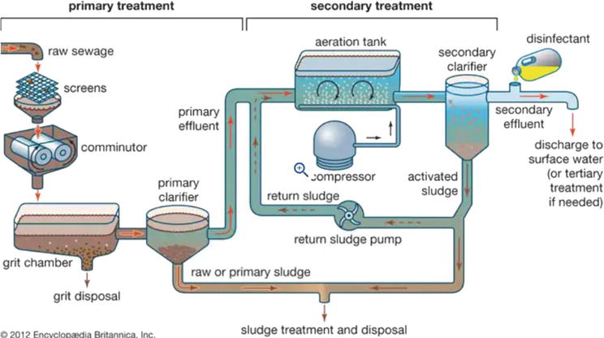
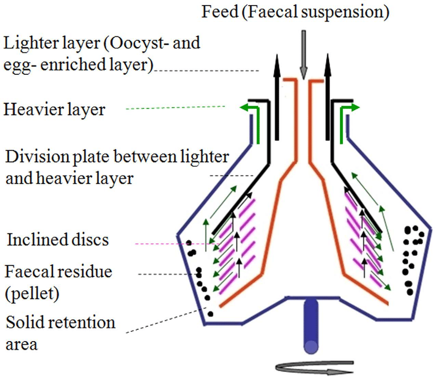
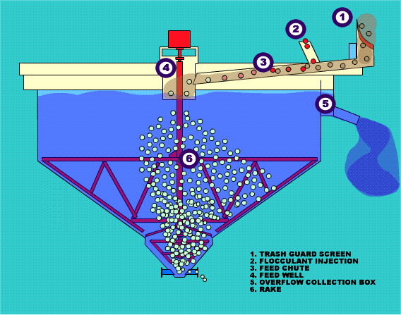
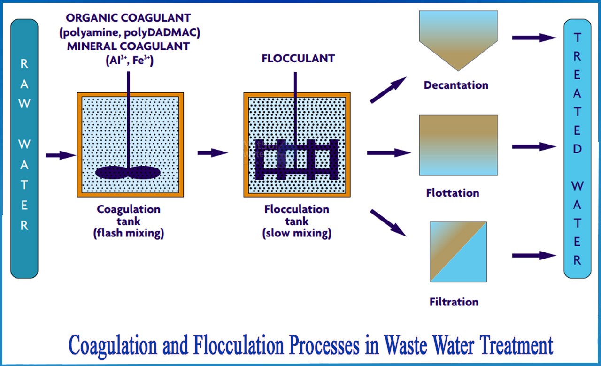
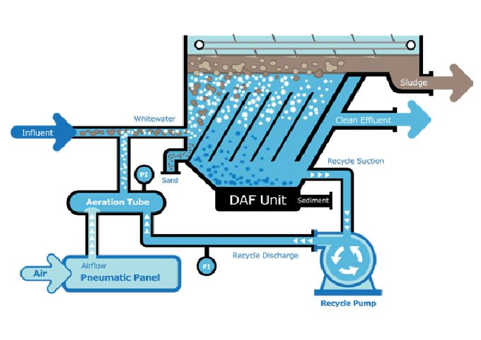
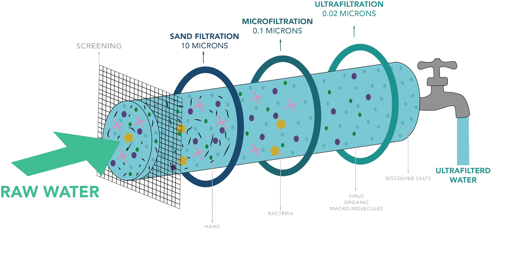

During the last three decades, environmental challenges related to the chemical and biological pollution of water have become significant as a subject of major concern for society, public agencies, and the industrial sector. Most home and industrial operations generate wastewater that contains harmful and undesirable pollutants. In this context, it is necessary to make continuous efforts to protect water supplies to ensure the availability of potable water. To eliminate insoluble particles and soluble pollutants from wastewaters, treatment technologies can be employed including physical, chemical, biological (bioremediation and anaerobic digestion), and membrane technologies. This chapter focuses on current and emerging technologies that demonstrate outstanding efficacy in removing contaminants from wastewater. The challenges of strengthening treatment procedures for effective wastewater treatment are identified, and future perspectives are presented. Wastewater treatment technologies Physical, chemical, biological, and combined technologies are commonly used in wastewater treatment facilities. Primary, secondary, and tertiary treatment procedures make up a conventional wastewater treatment plant (WWTP). Primary processes consist of screening, filtration, centrifugation, sedimentation, coagulation, and flotation. Biological treatment, which can be oxic or anoxic, is the most common secondary procedure while oxidation, precipitation, reverse osmosis, electrolysis, and electrodialysis are examples of tertiary treatment. Advanced oxidation processes (AOPs), ion exchange, ultra and nanofiltration, adsorption/biosorption, and advanced biological treatment combining algae, bacteria, and fungi are all emerging treatment methods that offer healthy and clean treated water [3].

Physical methods, in which physical forces are utilized to remove contaminants, were among the first wastewater treatment technologies used. They are still used in most wastewater treatment process flow systems. These methods are typically employed when water is heavily polluted. The most often used physical wastewater treatment methods are:

The first phase in a wastewater treatment operation is screening. The purpose of screening is to eliminate solid waste from wastewater, and it is applied to remove items such as faecal solids, fibre, cork, hair, fabric, kitchen trash, wood, paper, cork, and so on. As a result, different-sized screens are utilized, the size of which is dictated by the requirement, i.e. the size of the particles in the wastewater. In the filtering process, water is filtered in via a substance having fine holes. This is usually done with a set-up having pore diameters ranging from 0.1 to 0.5 mm. It is used to remove suspended particles, greases, oils, germs, and other contaminants. Membranes and cartridges are examples of filters that can be employed. Filtration can remove particles smaller than 100 mg l–1, as well as oil smaller than 25 mg l–1, reducing it by up to 99%. For water purification, the filtering process is used. Filtration water is utilized in ion exchange, adsorption, and membrane separation processes. Furthermore, filtration devices create potable water [5, 6]. To remove suspended noncolloidal particles, centrifugal separation is performed (size up to 1 mm). Solids (sludges) are separated and released after the wastewater is put to centrifugal devices and rotated at different speeds. Suspended solids segregate to a degree proportional to their densities. Furthermore, the centrifugal machine’s speed is also important for the removal of suspended materials. Oil and grease separation, as well as source reduction, are examples of applications.

This process removes suspended particles, grits, and silts by leaving water undisturbed/semi-disturbed in various types of tanks for varied time intervals. Under the pull of gravity, the suspended solids settle [5, 6, 7, 8]. The size and density of the solids, as well as the velocity of the water if it is moving, determine the settling time. To speed up the sedimentation process, alums are occasionally utilized. Gravity separation alone can remove up to 60% of suspended particles. Sedimentation is normally carried out before the application of standard treatment methods. It’s a cost-effective way to treat waste from the paper and refinery industries. Water is generated for membrane processes, ion exchange, industrial water supply, using this technology. Source reduction is another application of technology.

Non-settleable solids are allowed to settle when suspended solids do not settle down through sedimentation or gravity. Coagulation is the term for this process [5, 7]. It is possible to employ alum, starch, ferrous minerals, aluminum salts, and activated silica. Coagulants made of non-ionic polymers, anionic polymers, and synthetic cationic polymers are also effective, but they are usually more expensive than natural coagulants. The most essential governing parameters in the coagulation process are temperature, pH, and contact time. Specific coagulants are added to biological treatment units to remove bacteria and other organics that may be floating in the water. It’s the most significant part of a wastewater treatment unit, and it’s used for a variety of purposes, including wastewater treatment, recycling, and pollution removal.

A conventional water treatment facility’s flotation is a typical and necessary component. Flotation removes suspended particles, greases, oils, biological materials, and other contaminants by attaching them to air or gas [5, 9]. The solids bind to the gas or air and create agglomerates, which float to the water’s surface and can be skimmed off easily. Alum, activated silica, and other substances enhance the flotation process. The flotation process is aided by compressed air flowing through the water. Electro-flotation (electro-flocculation) has been utilized for recycling and water treatment for a long time. This method may remove up to 75% of suspended particles while also eliminating up to 95% of grease and oil. It’s a promising treatment method for paper and refinery sectors [5].

Ultrafiltration has been utilized to remediate a wide range of waterways around the world. According to reports, surface waters, including lake waters, rivers, and reservoirs, have been employed in 50% of UF membrane plants. This technology has been used to treat municipal drinking water for over a decade [12]. UF pores are typically between 0.01 and 0.05 mm (roughly 0.01 mm) in diameter or less. Larger organic macromolecules can be retained by UF membranes. They used to be defined by a molecular weight cut-off (MWCO) rather than a definite pore size [13]. Since the osmotic pressure of the feed solution is low, hydrostatic pressures in UF are typically in the range of 2–10 bar. The operation of a pressure-driven UF process can be separated into three distinct pressure ranges based on the relationship of permeate flow on applied pressure (i) linearly increasing flux (sufficiently low), (ii) intermediate, (iii) and limiting flux (sufficiently high). Even though its concentration polarization layer has not formed appreciably in the linearly increasing flux pressure range, the membrane is the only source of permeate flux resistance. Permeate flux in the limiting flux pressure range, on the other hand, is unaffected by the applied pressure. The process performance is primarily determined by these boundary layer phenomena, just as it is in MF [14]. Water and wastewater can be treated in a variety of ways using the UF process, including the manufacture of ultra-pure water for the electronics industry, COD levels are decreasing in maize starch plants, chemical treatment of groundwater combined with selective removal of dissolved hazardous metals, the dairy industry’s whey treatment, wine, or fruit juice clarification. The UF technology has several benefits such as perfect pore size range thus can be applied for the separation of most of the feed components, low energy usage owing to the unavailability of phase transition during separation, and simple and compact design makes it simple to use. In addition, for temperature-sensitive culinary, biological, and pharmaceutical applications, the most advanced membrane separation technology is UF. However, the application of this technology is faced with some drawbacks including an inability to desalinate saltwater because it cannot isolate dissolved salts or low molecular weight species. UF is ineffective at separating macromolecular mixtures; it can only be efficient if the species have a molecular weight difference of 10 times or more.Reach out to us for more information or to discuss your wastewater treatment needs. Our dedicated team is ready to provide personalized and sustainable solutions tailored to your requirements.
Wastewater Treatment Solutions